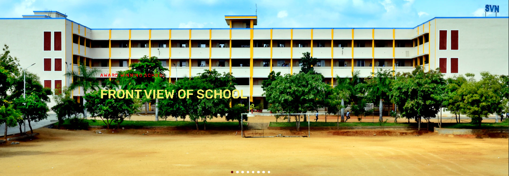

WELCOME TO SVN !

Contect
S.V.N Matric Higher Secondary School,
Kongampalayam, Chithode,
Erode - 638102,
The School is functioning under the auspices of Saraswathi Educational Trust. It is a full fledged school recognized by
the Government of Tamil Nadu. It is a Co-education institution and partly Residential. The School is purely
Self-Financing and not supported by any form of aid or grant from the Government.